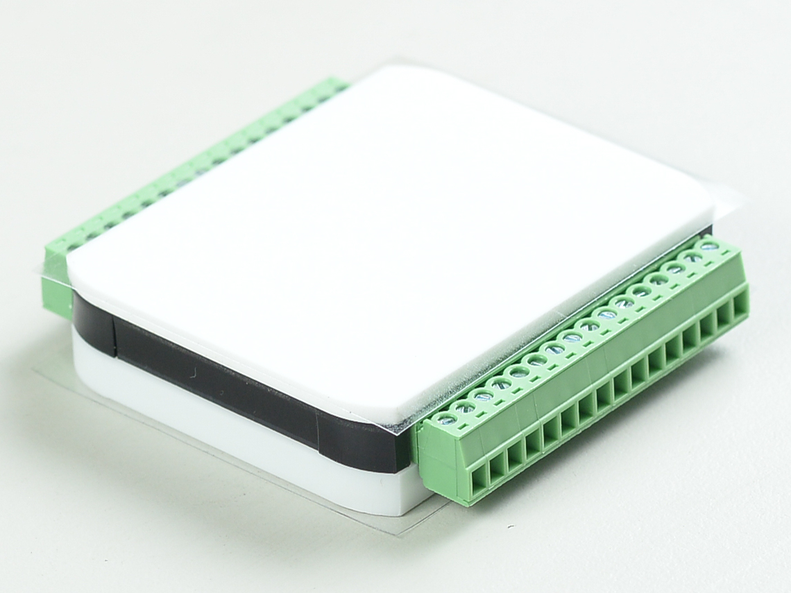

WPC Python Driver Programming Guide
Overview
WPC Python driver, also known as pywpc, contains APIs for interacting with basically WPC DAQ cards or any other WPC USB, WiFi and Ethernet based devices. It supports Python version from 3.8 to 3.10 under Windows 10 operating systems. In order to optimize the performance of driver API, we adopt async/await structure for driver implementation also known as non-blocking method.
Some API functions in the pywpc package may not compatible with earlier versions of WPC DAQ firmware. To update device firmware to the latest version, please use WPC Device Manager and LabVIEW Run-time engine. You can download WPC Device Manager by latest release or visit WPC Systems Ltd. official website.
Link |
|
|---|---|
WPC official site |
|
User guide |
https://wpc-systems-ltd.github.io/WPC_Python_driver_release/ |
Example code |
https://github.com/WPC-Systems-Ltd/WPC_Python_driver_release/tree/main/Examples |


Note
Make sure the latest version of firmware is up to date with your products.
Quick Start
>>> from wpcsys import pywpc
>>> pywpc.PKG_NAME
pywpc
>>> pywpc.__version__
1.0.2
>>> pywpc.product
['DeviceFinder', 'WifiDAQE3A', 'EthanD', 'EthanA', 'USBDAQF1D', 'USBDAQF1AD', 'USBDAQF1DSNK', 'USBDAQF1AOD', 'USBDAQF1TD', 'USBDAQF1CD', 'USBDAQF1RD']
Installation
Install wpcsys using pip:
pip install wpcsys
Upgrade
Upgrade wpcsys using pip:
pip install --upgrade wpcsys
Requirements
Python 3.8 or later with all requirements.txt dependencies installed, including PyQt5, PyQt5Designer, qasync and so on.
pip install -r requirements.txt
Products
Model |
Photo |
|---|---|
|

|
|
|
|
 |
|

|
|

|
|

|
|

|
|

|
|

|
|

|
{kind=link}
{kind=link}
References
License
WPC Python driver release is licensed under an MIT-style license see LICENSE Other incorporated projects may be licensed under different licenses. All licenses allow for non-commercial and commercial use.